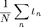
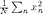
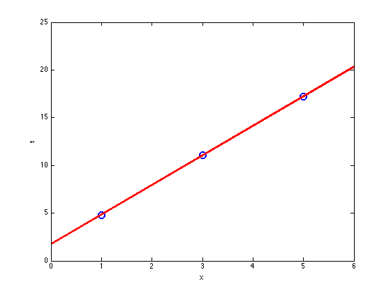

Contents
fitlinear.m
From A First Course in Machine Learning, Chapter 1. Simon Rogers, 31/10/11 [simon.rogers@glasgow.ac.uk]
clear all;close all;
Define the data (Table 1.1)
Change these to use a different dataset
x = [1;3;5];
t = [4.8;11.1;17.2];
N = length(x); % 3
Compute the various averages required

m_x = sum(x)/N;

m_t = sum(t)/N;

m_xt = sum(t.*x)/N;

m_xx = sum(x.*x)/N;
Compute w1 (gradient) (Equation 1.10)
w_1 = (m_xt - m_x*m_t)/(m_xx - m_x^2);
Compute w0 (intercept) (Equation 1.8)
w_0 = m_t - w_1*m_x;
Plot the data and linear fit
figure(1);hold off plot(x,t,'bo','markersize',10,'linewidth',2) xplot = [0 6]; xlim(xplot) hold on plot(xplot,w_0+w_1*xplot,'r','linewidth',2) xlabel('x'); ylabel('t');